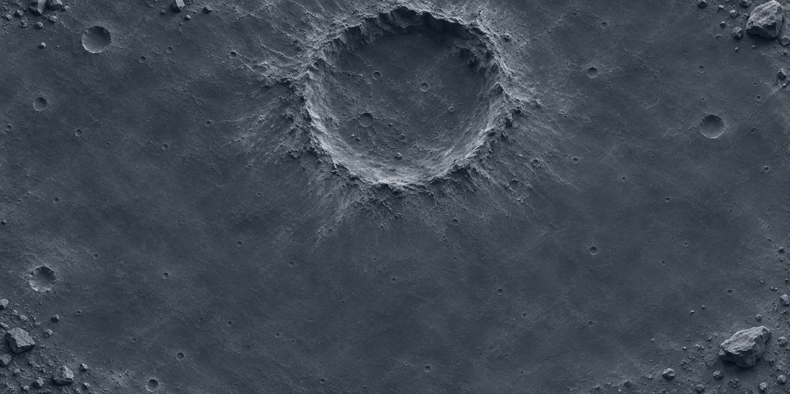

月面地質 · 證據判讀
撞擊坑證據比較學習單
比較兩個月面區域的簡化資料，分清觀察與推論，練習為月面歷史提出有條件的解釋。

學習目標與準備
- 依相同觀察條件比較撞擊坑資料。
- 區分直接觀察、推論與仍需要的證據。
鉛筆、兩色筆；可搭配文章中的月面情境插圖進行描述練習。
下方可預覽學生版。開啟列印版後，可選擇只印活動單，或加印教師指引。
下一站，宇宙！ · 學生活動單
撞擊坑證據比較學習單
班級：＿＿＿＿ 姓名：＿＿＿＿ 日期：＿＿＿＿
以下是兩個假想月面區域的教學資料，不是實測結果。A、B 面積相同，影像解析度相同，只計入直徑至少 1 公里的撞擊坑。先比較資料，再提出解釋。
| 比較項目 | 區域 A | 區域 B |
|---|---|---|
| 可辨識撞擊坑數 | 12 個 | 35 個 |
| 邊緣較模糊的坑 | 3 個 | 18 個 |
| 是否已取得岩石定年 | 否 | 否 |
寫出兩項可以直接從資料讀到的差異，不要先寫「比較老」。
如果其他條件相近，哪個區域可能較早形成？引用一項數據支持。
只靠坑數，就能知道表面形成於哪一年嗎？還需要什麼資料？
把你的說明寫成三句：我的推論是＿＿；依據是＿＿；但還需要＿＿才能更確定。
展開教師指引與參考答案
教師指引與參考答案
學習目標
- 依相同觀察條件比較撞擊坑資料。
- 區分直接觀察、推論與仍需要的證據。
準備材料
鉛筆、兩色筆；可搭配文章中的月面情境插圖進行描述練習。
課堂流程 · 40 分鐘
- 觀察與推論 · 8 分鐘
先分類「B 有 35 個坑」和「B 較老」，說明兩者差別。
- 讀表比較 · 12 分鐘
學生圈出比較條件，分組整理差異。
- 證據辯論 · 12 分鐘
各組提出表面歷史解釋，另一組追問需要的證據。
- 修正結論 · 8 分鐘
保留有條件的推論，補寫資料限制。
參考答案與討論重點
- 直接觀察例：B 比 A 多 23 個可辨識坑；B 的模糊邊緣坑較多。
- 其他條件相近時，B 可能較老，因為累積較多撞擊坑。坑數不是單獨決定年齡的絕對證據。
- 無法讀出確切年份；可加入岩石定年、地質事件及不同區域比較，檢查表面是否曾被覆蓋或改變。
形成性評量
能分開寫觀察與推論，引用數據並說出至少一個限制；不把「可能較老」寫成已確定的年份。